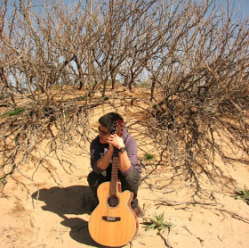

|  |
Mingbo Ma
|
Baigong Zheng, Kaibo Liu, Renjie Zheng, Mingbo Ma, Hairong Liu, Liang Huang, "Simultaneous Translation Policies: From Fixed to Adaptive". ACL, 2020 .
Renjie Zheng*, Mingbo Ma*, Baigong Zheng, Kaibo Liu, Liang Huang, "Opportunistic Decoding with Timely Correction for Simultaneous Translation". ACL, 2020 . (* equal contributions)
Renjie Zheng*, Mingbo Ma*, Baigong Zheng, Liang Huang, "Speculative Beam Search for Simultaneous Translation". EMNLP, 2019 . (* equal contributions)
Baigong Zheng*, Renjie Zheng*, Mingbo Ma, Liang Huang, "Simpler and Faster Learning of Adaptive Policies for Simultaneous Translation". EMNLP, 2019 . (* equal contributions)
Renjie Zheng*, Hairong Liu*, Mingbo Ma, Baigong Zheng, Liang Huang, "Robust Machine Translation with Domain Sensitive Pseudo-Sources: Baidu-OSU WMT19 MT Robustness Shared Task System Report". WMT, 2019 . (* equal contributions)
Mingbo Ma *, Liang Huang *, Hao Xiong, Renjie Zheng, Kaibo Liu, Baigong Zheng, Chuanqiang Zhang, Zhongjun He, Hairong Liu, Xing Li, Hua Wu and Haifeng Wang, "STACL: Simultaneous Translation with Integrated Anticipation and Controllable Latency". ACL, 2019. (* equal contributions)
Baigong Zheng *, Renjie Zheng *, Mingbo Ma *, and Liang Huang, "Simultaneous Translation with Flexible Policy via Restricted Imitation Learning". ACL, 2019. (* equal contributions)
Hairong Liu, Mingbo Ma, Liang Huang, Hao Xiong and Zhongjun He, "Robust Neural Machine Translation with Joint Textual and Phonetic Embedding". ACL, 2019.
Mingbo Ma *, Renjie Zheng * and Liang Huang, "Learning to Stop in Structured Prediction for Neural Machine Translation". NAACL, 2019. (* equal contributions)
Renjie Zheng, Mingbo Ma and Liang Huang, "Multi-Reference Training with Pseudo-References for Neural Translation and Text Generation". EMNLP, 2018.
Yilin Yang, Liang Huang and Mingbo Ma, "Breaking the Beam Search Curse: A Study of (Re-)Scoring Methods and Stopping Criteria for Neural Machine Translation". EMNLP, 2018.
Renjie Zheng, Yilin Yang, Mingbo Ma and Liang Huang, "Ensemble Sequence Level Training for Multimodal MT: OSU-Baidu WMT18 Multimodal Machine Translation System Report". WMT, 2018.
Liang Huang, Kai Zhao and Mingbo Ma, "When to Finish? Optimal Beam Search for Neural Text Generation (modulo beam size)". EMNLP, 2017.
Mingbo Ma, Dapeng Li, Kai Zhao, Liang Huang,
"OSU Multimodal Machine Translation System Report". for
WMT 2017 competition on multimodal translation .
We achieved the best TER score among 15 systems on the English+Image->German COCO task (the hardest task in that competition, since it's into
German rather than French, and tested on out of domain images).
Mingbo Ma, Kai Zhao, Liang Huang, Bing Xiang and Bowen Zhou, "Jointly Trained Sequential Labeling and Classification by Sparse Attention Neural Networks". Interspeech, 2017.
Mingbo Ma, Liang Huang, Bing Xiang and Bowen Zhou, "Group Sparse CNNs for Question Classification with Answer Sets". ACL, 2017.
Ramesh Nallapati, Bowen Zhou and Mingbo Ma, "Classify or Select: Neural Architectures for Extractive Document Summarization". arXiv, 2016.
Kai Zhao, Liang Huang and Mingbo Ma, "Textual Entailment with Structured Attentions and Composition". COLING, 2016.[Code]
Mingbo Ma, Liang Huang, Bing Xiang and Bowen Zhou, "Dependency-based Convolutional Neural Networks for Sentence Embedding". ACL, 2015. [Slides][Video][Code][bibtex]
Ming Shao, Mingbo Ma, and Yun Fu, "Sparse Manifold Subspace Learning". In Low-Rank and Sparse Modeling for Visual Analysis , Springer, 2014
Mingbo Ma, Ming Shao, Xu Zhao and Yun Fu, "Prototype Based Feature Learning for Face Image Set Classification". IEEE International Conference on Automatic Face and Gesture Recognition (FG), 2013.
Mingbo Ma, Gonet, R., Yu, R. and Anagnostopoulos, G.C., "Metric Representations of Data via the Kernel-based Sammon Mapping". IEEE International Joint Conference on Neural Networks (IJCNN), 2010.
Qian Ma and Mingbo Ma, "Broadband Amplifier Gain Slope Equalization Filter". Progress In Electromagnetics Research Symposium (PIERS), 2008.
Baidu Research, Silicon Valley AI Lab (SVAIL), Summer Research Internship 2018
Apple Inc., Summer Research Internship 2017
IBM T.J. Watson Research Center, Summer Research Internship 2016
Authentec Inc.(acquired by Apple Inc. in 2012) from 2010 to 2011
Deep Learning @ OSU 2017
Algorithms @ OSU 2016
Deep Learning @ OSU 2016
Theory of Computation @ OSU 2015
Software Engineering @ CUNY 2015
Introduction to Computers and Computation @ CUNY 2014
Program Committee and Paper Reviewer:
AAAI (2018, 2019), ACL (2018, 2019), AISTATS (2019), COLING (2016, 2018),
EMNLP (2018), ICLR (2019), ICML (2019), IJCAI (2018), NAACL (2018, 2019),
Neurocomputing (2013), TALLIP (2018)